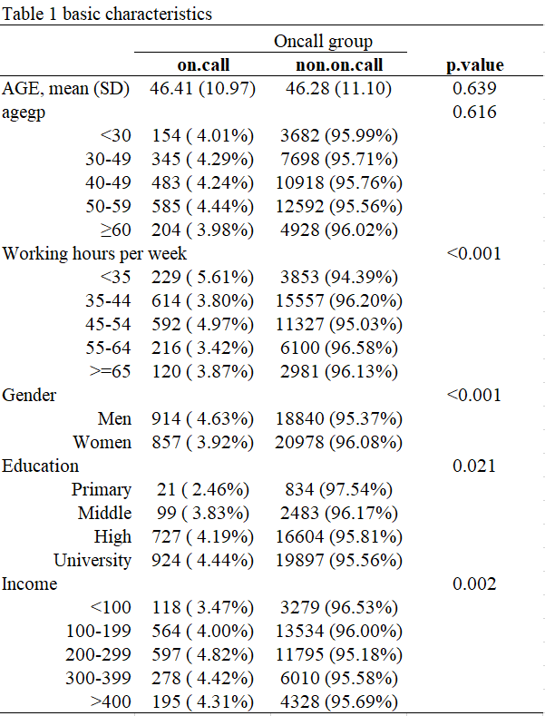
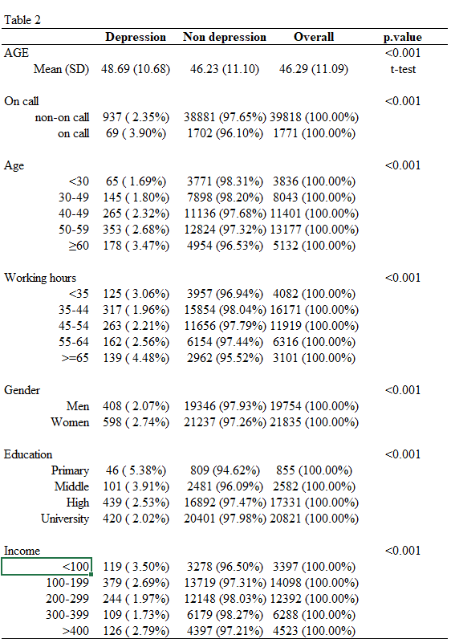

Chapter 7 Tables for public health
7.1 데이터표 준비
데이터 변형을 실습 자료인 2017년 근로환경조사 자료를 통해 실습할 것입니다.. 자료는 안전보건공단, 근로환경조사 원시자료 사이트 (http://kosha.or.kr/kosha/data/primitiveData.do) 에서 신청할 수 있습니다.. 시각화는 표와 그래프 둘을 다룰 것이고, 표는 보건학에서 주로 사용하는 표1,2,3과 그래프는 막대 그래프부터 시계열 자료까지 나타내도록 하겠습니다. 실습에 필요한 라이브러리를 불러오겠습니다.
library(devtools)
library(Table1)
library(ggplot2)
library(tidyverse)
library(htmlTable)
library(haven)
library(gmodels)7.2 보건학에서 주로 사용하는 표
아래의 글들과 함께 동영상도 같이 시청하면서 공부하시면 편할 것 같습니다.
7.2.1 표1, 또는 기초 그래프
표1은 데이터의 분포를 나타내고, 연속변수인 경우 평균과 표준편차, 또는 중간값과 25%-75% 값을 나타냅니다. 명목변수인 경우에는 빈도와 백분율 등으로 나타냅니다. 우선 15 ~ 65세의 연령에 남녀가 있는 경우를 예로 들겠습니다.
n = 100
age <- sample(c(15:65), n, replace = TRUE)
hist(age)
gender <- sample(c('Women', 'Men'), n, replace = TRUE)
table(gender) %>%
pie()
group <- sample(c('A', 'B'), n, replace = TRUE)
table(group) %>%
pie()
dat <- data.frame(age, gender, group)평균 표준편차, 중간값 25%, 75% 순위값으로 연령을, 명수 (%)로 성별을 나타내 보겠습니다. 기본적인 함수는 아래와 같습니다 .
mean(age) # 평균## [1] 41.75sd(age) # 표준편차## [1] 14.92566median(age) # 중앙값## [1] 42quantile(age, probs=c(0.25, 0.75)) # 25%, 75% 값## 25% 75%
## 28 55table(gender) # 명수## gender
## Men Women
## 57 43CrossTable(gender) # 백분율과 함께##
##
## Cell Contents
## |-------------------------|
## | N |
## | N / Table Total |
## |-------------------------|
##
##
## Total Observations in Table: 100
##
##
## | Men | Women |
## |-----------|-----------|
## | 57 | 43 |
## | 0.570 | 0.430 |
## |-----------|-----------|
##
##
##
## CrossTable(group, gender) # 집단에 따른 분율##
##
## Cell Contents
## |-------------------------|
## | N |
## | Chi-square contribution |
## | N / Row Total |
## | N / Col Total |
## | N / Table Total |
## |-------------------------|
##
##
## Total Observations in Table: 100
##
##
## | gender
## group | Men | Women | Row Total |
## -------------|-----------|-----------|-----------|
## A | 30 | 26 | 56 |
## | 0.115 | 0.153 | |
## | 0.536 | 0.464 | 0.560 |
## | 0.526 | 0.605 | |
## | 0.300 | 0.260 | |
## -------------|-----------|-----------|-----------|
## B | 27 | 17 | 44 |
## | 0.147 | 0.195 | |
## | 0.614 | 0.386 | 0.440 |
## | 0.474 | 0.395 | |
## | 0.270 | 0.170 | |
## -------------|-----------|-----------|-----------|
## Column Total | 57 | 43 | 100 |
## | 0.570 | 0.430 | |
## -------------|-----------|-----------|-----------|
##
## 물론 tidyverse 를 이용하여 분석하는 것이 더 편리합니다. 특히 집단별 비교라던가 하는 조건등이 있을때 편리합니다.집단(A, B)에 따른 상기 값을 구해보겠습니다 .
dat %>%
group_by(group) %>%
summarise(age_mean = mean(age),
age_std = sd (age))## # A tibble: 2 × 3
## group age_mean age_std
## <chr> <dbl> <dbl>
## 1 A 42.1 14.9
## 2 B 41.3 15.1dat %>%
group_by(group) %>%
count(gender) # 성별 명수만 나타냄## # A tibble: 4 × 3
## # Groups: group [2]
## group gender n
## <chr> <chr> <int>
## 1 A Men 30
## 2 A Women 26
## 3 B Men 27
## 4 B Women 17dat %>%
group_by(group) %>%
count(gender) %>%
mutate(prob = n/sum(n)) # 성별 명수와 분율 표시## # A tibble: 4 × 4
## # Groups: group [2]
## group gender n prob
## <chr> <chr> <int> <dbl>
## 1 A Men 30 0.536
## 2 A Women 26 0.464
## 3 B Men 27 0.614
## 4 B Women 17 0.386표를 만들때 변수가 매우 많을 경우 반복작업을 많이 하게됩니다. 자료의 분포를 보고 의미를 찾아내는 것을 위해 너무 많은 시간과 반복 작업을 하게된다는 것입니다. 특히 소통을 위해 기본 표를 만드는 것에 상당 시간이 걸리게 됩니다. 상급자와 연구를 같이 진행하면서, 표를 만들어 간 후 방법이 바뀔 때마다 얼마나 많은 엑셀과 워드 작업을 했었나요? 가장 지치는 작업중 하나입니다.
다행히 R library 중에 Table 1 등 여러 라이브러리가 이러한 반복 작업을 줄여줄 수 있습니다.
저번 시간에 만든 근로환경조사 데이터를 이용하여 실습하겠습니다. 저번 실습 및 과제때 만든 데이터 과정을 아래에 수록했습니다.
a=read_sas("data/kwcs5th.sas7bdat") # 근로환경조사 5차
# 변수생성: 온콜 여부/빈도, 우울, 연령, 성별, 교육, 근무시간, 종사상지위, 고용형태, 소득#
a0<-a %>%
select(Q35, AGE, TSEX, TEF1, Q22_1, Q05, Q06, EF11, EF12, Q69,Q62_1_8, Q35)
# 변수 구획 정하기 ------
Wh_breaks <- c(-Inf, 35, 45, 55, 65, Inf)
Wh_labels <- c('<35','35-44','45-54','55-64','>=65')
inc_break <- c(-Inf, 100, 200, 300, 400, Inf)
inc_label <- c('<100', '100-199', '200-299', '300-399', '>400')
# 데이터 step ------
a1 <-a0 %>%
filter(AGE <65 ) %>% #50205 --> 41807 : 8401명 제외
filter(!is.na(Q22_1)) %>%
filter(!TEF1 == 9) %>%
filter(!Q69 == 9) %>%
filter(!Q62_1_8 == 9) %>% # 41807 --> 41589 :218 명 제외
mutate(oncall = Q35) %>%
mutate(oncallgp = ifelse(oncall %in% c(1, 2, 3), "on call", "non-on call")) %>%
mutate(oncallgp3 = ifelse(oncall %in% c(1,2,3), "several times a month",
ifelse(oncall %in% c(4), "rarely", "none"))) %>%
mutate(oncallgp3 = factor(oncallgp3,
levels=c("none", "rarely", "several times a month")))%>%
mutate(agegp = ifelse(AGE <30, '<30',
ifelse(AGE <40, '30-49',
ifelse(AGE <50, '40-49',
ifelse(AGE < 60, '50-59', '≥60'))))) %>%
mutate(Wh=cut(Q22_1, breaks=Wh_breaks, include.lowest=TRUE, right=FALSE,
labels=Wh_labels)) %>%
mutate(Wh=structure(Wh, label='Working hours')) %>%
mutate(Gender=factor(TSEX, levels=c(1,2), labels=c('Men', 'Women') )) %>%
mutate(Education=factor(TEF1, levels=c(1,2,3,4),
labels=(c('Primary', 'Middle', 'High', 'University')))) %>%
mutate(Statusw=ifelse(Q05 %in% c(1,2), 'Self employer',
ifelse(Q05 %in% c(3), 'Paid worker',
'Family workers and others'))) %>%
mutate(inc1=ifelse(EF11 <10000, EF11, ifelse(EF12<10, EF12*100-50, NA) )) %>%
mutate(inc=cut(inc1, breaks=inc_break, labels=inc_label)) %>%
mutate(job_st = factor(Q69, levels = c(1:4),
labels = c("Very satisfied", "Satisfied", "Unsatisfied", "Very unsatisfied"))) %>%
mutate(job_st = structure(job_st, label = 'Job Satisfaction')) %>%
mutate(depression = Q62_1_8)%>%
mutate(depression = structure(factor(depression, levels=c(1, 2),
labels=c("Depression", "Non depression"))))이때 온콜과 연령에 대한 표를 만들겠습니다. cat.varlist 뒤에는 명목변수를, cont.varlist에는 연속변수를 넣습니다. cat.rmstat, cont.rmstat에는 표시하지 않을 항목을 넣습니다. 마지막 htmlTable()은 이것을 html에 출력해서 복사 붙여 넣기가 쉽게 되도록 하는 것입니다.
make.table(dat =a1,
cat.varlist = c("oncallgp"), # 명목변수
cat.rmstat = list(c("col")), #
cont.varlist = c("AGE"), # 연속변수
cont.rmstat = list(c("count"))) %>% htmlTable()## Variable Overall
## AGE
## Mean (SD) 46.29 (11.09)
## Median (IQR) 48.00 (17.00)
## Q1, Q3 38.00, 55
## Min, Max 17.00, 64
## Missing 0
##
## oncallgp
## Count 41589
## (%)
## non-on call 39818 (95.74%)
## on call 1771 ( 4.26%)
## Missing 0
## | Variable | Overall | |
|---|---|---|
| 1 | AGE | |
| 2 | Mean (SD) | 46.29 (11.09) |
| 3 | Median (IQR) | 48.00 (17.00) |
| 4 | Q1, Q3 | 38.00, 55 |
| 5 | Min, Max | 17.00, 64 |
| 6 | Missing | 0 |
| 7 | ||
| 8 | oncallgp | |
| 9 | Count | 41589 |
| 10 | (%) | |
| 11 | non-on call | 39818 (95.74%) |
| 12 | on call | 1771 ( 4.26%) |
| 13 | Missing | 0 |
| 14 |
7.2.2 종속변수를 중심으로한 표 1 만들기
보건학에서 가장 자주 사용하는 표는, 종속변수를 맨 위에 넣고 관심변수의 분포를 보여주는 것입니다. 위에 Table 1 라이브러리에서 strat라는 항목이있는데, 이는 tidy에서 group_by에 해당한다고 보시면 됩니다. strat에 종속변수 (depression) 을 넣고 표를 만들어 보겠습니다.
tb1<-make.table(dat = a1,
strat = c("depression"),
cat.varlist = c("oncallgp", "agegp", "Gender", "Education", "Wh",
'inc'),
#"job_st",
cat.rmstat = list(c("count", "col", "miss")),
cat.ptype = c("chisq"),
cont.varlist = c("AGE"),
cont.rmstat = list(c("count","miss", "minmax", "q1q3", "mediqr")),
cont.ptype = c( "ttest"))## Variable Depression Non.depression Overall p.value
## AGE <0.001
## Mean (SD) 48.69 (10.68) 46.23 (11.10) 46.29 (11.09) t-test
##
## oncallgp <0.001
## (Row %) Chi-square
## non-on call 937 ( 2.35%) 38881 (97.65%) 39818 (100.00%)
## on call 69 ( 3.90%) 1702 (96.10%) 1771 (100.00%)
##
## agegp <0.001
## (Row %) Chi-square
## <30 65 ( 1.69%) 3771 (98.31%) 3836 (100.00%)
## ≥60 178 ( 3.47%) 4954 (96.53%) 5132 (100.00%)
## 30-49 145 ( 1.80%) 7898 (98.20%) 8043 (100.00%)
## 40-49 265 ( 2.32%) 11136 (97.68%) 11401 (100.00%)
## 50-59 353 ( 2.68%) 12824 (97.32%) 13177 (100.00%)
##
## Wh <0.001
## (Row %) Chi-square
## <35 125 ( 3.06%) 3957 (96.94%) 4082 (100.00%)
## 35-44 317 ( 1.96%) 15854 (98.04%) 16171 (100.00%)
## 45-54 263 ( 2.21%) 11656 (97.79%) 11919 (100.00%)
## 55-64 162 ( 2.56%) 6154 (97.44%) 6316 (100.00%)
## >=65 139 ( 4.48%) 2962 (95.52%) 3101 (100.00%)
##
## Gender <0.001
## (Row %) Chi-square
## Men 408 ( 2.07%) 19346 (97.93%) 19754 (100.00%)
## Women 598 ( 2.74%) 21237 (97.26%) 21835 (100.00%)
##
## Education <0.001
## (Row %) Chi-square
## Primary 46 ( 5.38%) 809 (94.62%) 855 (100.00%)
## Middle 101 ( 3.91%) 2481 (96.09%) 2582 (100.00%)
## High 439 ( 2.53%) 16892 (97.47%) 17331 (100.00%)
## University 420 ( 2.02%) 20401 (97.98%) 20821 (100.00%)
##
## inc <0.001
## (Row %) Chi-square
## <100 119 ( 3.50%) 3278 (96.50%) 3397 (100.00%)
## 100-199 379 ( 2.69%) 13719 (97.31%) 14098 (100.00%)
## 200-299 244 ( 1.97%) 12148 (98.03%) 12392 (100.00%)
## 300-399 109 ( 1.73%) 6179 (98.27%) 6288 (100.00%)
## >400 126 ( 2.79%) 4397 (97.21%) 4523 (100.00%)
## rownames(tb1) <- c()
tb1 %>% htmlTable()| Variable | Depression | Non.depression | Overall | p.value | |
|---|---|---|---|---|---|
| 1 | AGE | <0.001 | |||
| 2 | Mean (SD) | 48.69 (10.68) | 46.23 (11.10) | 46.29 (11.09) | t-test |
| 3 | |||||
| 4 | oncallgp | <0.001 | |||
| 5 | (Row %) | Chi-square | |||
| 6 | non-on call | 937 ( 2.35%) | 38881 (97.65%) | 39818 (100.00%) | |
| 7 | on call | 69 ( 3.90%) | 1702 (96.10%) | 1771 (100.00%) | |
| 8 | |||||
| 9 | agegp | <0.001 | |||
| 10 | (Row %) | Chi-square | |||
| 11 | <30 | 65 ( 1.69%) | 3771 (98.31%) | 3836 (100.00%) | |
| 12 | ≥60 | 178 ( 3.47%) | 4954 (96.53%) | 5132 (100.00%) | |
| 13 | 30-49 | 145 ( 1.80%) | 7898 (98.20%) | 8043 (100.00%) | |
| 14 | 40-49 | 265 ( 2.32%) | 11136 (97.68%) | 11401 (100.00%) | |
| 15 | 50-59 | 353 ( 2.68%) | 12824 (97.32%) | 13177 (100.00%) | |
| 16 | |||||
| 17 | Wh | <0.001 | |||
| 18 | (Row %) | Chi-square | |||
| 19 | <35 | 125 ( 3.06%) | 3957 (96.94%) | 4082 (100.00%) | |
| 20 | 35-44 | 317 ( 1.96%) | 15854 (98.04%) | 16171 (100.00%) | |
| 21 | 45-54 | 263 ( 2.21%) | 11656 (97.79%) | 11919 (100.00%) | |
| 22 | 55-64 | 162 ( 2.56%) | 6154 (97.44%) | 6316 (100.00%) | |
| 23 |
=65 |
139 ( 4.48%) | 2962 (95.52%) | 3101 (100.00%) | |
| 24 | |||||
| 25 | Gender | <0.001 | |||
| 26 | (Row %) | Chi-square | |||
| 27 | Men | 408 ( 2.07%) | 19346 (97.93%) | 19754 (100.00%) | |
| 28 | Women | 598 ( 2.74%) | 21237 (97.26%) | 21835 (100.00%) | |
| 29 | |||||
| 30 | Education | <0.001 | |||
| 31 | (Row %) | Chi-square | |||
| 32 | Primary | 46 ( 5.38%) | 809 (94.62%) | 855 (100.00%) | |
| 33 | Middle | 101 ( 3.91%) | 2481 (96.09%) | 2582 (100.00%) | |
| 34 | High | 439 ( 2.53%) | 16892 (97.47%) | 17331 (100.00%) | |
| 35 | University | 420 ( 2.02%) | 20401 (97.98%) | 20821 (100.00%) | |
| 36 | |||||
| 37 | inc | <0.001 | |||
| 38 | (Row %) | Chi-square | |||
| 39 | <100 | 119 ( 3.50%) | 3278 (96.50%) | 3397 (100.00%) | |
| 40 | 100-199 | 379 ( 2.69%) | 13719 (97.31%) | 14098 (100.00%) | |
| 41 | 200-299 | 244 ( 1.97%) | 12148 (98.03%) | 12392 (100.00%) | |
| 42 | 300-399 | 109 ( 1.73%) | 6179 (98.27%) | 6288 (100.00%) | |
| 43 |
400 |
126 ( 2.79%) | 4397 (97.21%) | 4523 (100.00%) | |
| 44 |
7.2.3 관심변수를 중심으로 한 표 2 만들기
이번에는 온콜 여부에 따라 관심변수의 분포를 확인해 보겠습니다. 이는 보건학 연구방법론이나 역학적 연구방법론에서 보정할 변수 또는 층화할 변수 등 향후 분석방법에 대한 방향 설정에 중요하게 다루어집니다. 본 수업에서는 자세한 설명은 하지 않겠습니다.
tb2<-make.table(dat = a1,
strat = c("oncallgp3"),
cat.varlist = c("agegp", "Gender", "Education", "Wh",
'inc','depression'),
#,"job_st"
cat.rmstat = list(c("count", "col", "miss")),
cat.ptype = c("chisq"),
cont.varlist = c("AGE"),
cont.rmstat = list(c("count","miss", "minmax", "q1q3", "mediqr")),
cont.ptype = c( "anova"))## Variable none rarely several.times.a.month
## AGE
## Mean (SD) 46.53 (11.10) 44.82 (10.99) 46.41 (10.97)
##
## agegp
## (Row %)
## <30 3062 (79.82%) 620 (16.16%) 154 ( 4.01%)
## ≥60 4414 (86.01%) 514 (10.02%) 204 ( 3.98%)
## 30-49 6378 (79.30%) 1320 (16.41%) 345 ( 4.29%)
## 40-49 9294 (81.52%) 1624 (14.24%) 483 ( 4.24%)
## 50-59 10869 (82.48%) 1723 (13.08%) 585 ( 4.44%)
##
## Wh
## (Row %)
## <35 3419 (83.76%) 434 (10.63%) 229 ( 5.61%)
## 35-44 13013 (80.47%) 2544 (15.73%) 614 ( 3.80%)
## 45-54 9492 (79.64%) 1835 (15.40%) 592 ( 4.97%)
## 55-64 5397 (85.45%) 703 (11.13%) 216 ( 3.42%)
## >=65 2696 (86.94%) 285 ( 9.19%) 120 ( 3.87%)
##
## Gender
## (Row %)
## Men 15392 (77.92%) 3448 (17.45%) 914 ( 4.63%)
## Women 18625 (85.30%) 2353 (10.78%) 857 ( 3.92%)
##
## Education
## (Row %)
## Primary 774 (90.53%) 60 ( 7.02%) 21 ( 2.46%)
## Middle 2239 (86.72%) 244 ( 9.45%) 99 ( 3.83%)
## High 14372 (82.93%) 2232 (12.88%) 727 ( 4.19%)
## University 16632 (79.88%) 3265 (15.68%) 924 ( 4.44%)
##
## inc
## (Row %)
## <100 2932 (86.31%) 347 (10.21%) 118 ( 3.47%)
## 100-199 11894 (84.37%) 1640 (11.63%) 564 ( 4.00%)
## 200-299 9970 (80.46%) 1825 (14.73%) 597 ( 4.82%)
## 300-399 4889 (77.75%) 1121 (17.83%) 278 ( 4.42%)
## >400 3570 (78.93%) 758 (16.76%) 195 ( 4.31%)
##
## depression
## (Row %)
## Depression 773 (76.84%) 164 (16.30%) 69 ( 6.86%)
## Non depression 33244 (81.92%) 5637 (13.89%) 1702 ( 4.19%)
##
## Overall p.value
## <0.001
## 46.29 (11.09) 1-way ANOVA
##
## <0.001
## Chi-square
## 3836 (100.00%)
## 5132 (100.00%)
## 8043 (100.00%)
## 11401 (100.00%)
## 13177 (100.00%)
##
## <0.001
## Chi-square
## 4082 (100.00%)
## 16171 (100.00%)
## 11919 (100.00%)
## 6316 (100.00%)
## 3101 (100.00%)
##
## <0.001
## Chi-square
## 19754 (100.00%)
## 21835 (100.00%)
##
## <0.001
## Chi-square
## 855 (100.00%)
## 2582 (100.00%)
## 17331 (100.00%)
## 20821 (100.00%)
##
## <0.001
## Chi-square
## 3397 (100.00%)
## 14098 (100.00%)
## 12392 (100.00%)
## 6288 (100.00%)
## 4523 (100.00%)
##
## <0.001
## Chi-square
## 1006 (100.00%)
## 40583 (100.00%)
## rownames(tb2) <- c()
tb2 %>% htmlTable()| Variable | none | rarely | several.times.a.month | Overall | p.value | |
|---|---|---|---|---|---|---|
| 1 | AGE | <0.001 | ||||
| 2 | Mean (SD) | 46.53 (11.10) | 44.82 (10.99) | 46.41 (10.97) | 46.29 (11.09) | 1-way ANOVA |
| 3 | ||||||
| 4 | agegp | <0.001 | ||||
| 5 | (Row %) | Chi-square | ||||
| 6 | <30 | 3062 (79.82%) | 620 (16.16%) | 154 ( 4.01%) | 3836 (100.00%) | |
| 7 | ≥60 | 4414 (86.01%) | 514 (10.02%) | 204 ( 3.98%) | 5132 (100.00%) | |
| 8 | 30-49 | 6378 (79.30%) | 1320 (16.41%) | 345 ( 4.29%) | 8043 (100.00%) | |
| 9 | 40-49 | 9294 (81.52%) | 1624 (14.24%) | 483 ( 4.24%) | 11401 (100.00%) | |
| 10 | 50-59 | 10869 (82.48%) | 1723 (13.08%) | 585 ( 4.44%) | 13177 (100.00%) | |
| 11 | ||||||
| 12 | Wh | <0.001 | ||||
| 13 | (Row %) | Chi-square | ||||
| 14 | <35 | 3419 (83.76%) | 434 (10.63%) | 229 ( 5.61%) | 4082 (100.00%) | |
| 15 | 35-44 | 13013 (80.47%) | 2544 (15.73%) | 614 ( 3.80%) | 16171 (100.00%) | |
| 16 | 45-54 | 9492 (79.64%) | 1835 (15.40%) | 592 ( 4.97%) | 11919 (100.00%) | |
| 17 | 55-64 | 5397 (85.45%) | 703 (11.13%) | 216 ( 3.42%) | 6316 (100.00%) | |
| 18 |
=65 |
2696 (86.94%) | 285 ( 9.19%) | 120 ( 3.87%) | 3101 (100.00%) | |
| 19 | ||||||
| 20 | Gender | <0.001 | ||||
| 21 | (Row %) | Chi-square | ||||
| 22 | Men | 15392 (77.92%) | 3448 (17.45%) | 914 ( 4.63%) | 19754 (100.00%) | |
| 23 | Women | 18625 (85.30%) | 2353 (10.78%) | 857 ( 3.92%) | 21835 (100.00%) | |
| 24 | ||||||
| 25 | Education | <0.001 | ||||
| 26 | (Row %) | Chi-square | ||||
| 27 | Primary | 774 (90.53%) | 60 ( 7.02%) | 21 ( 2.46%) | 855 (100.00%) | |
| 28 | Middle | 2239 (86.72%) | 244 ( 9.45%) | 99 ( 3.83%) | 2582 (100.00%) | |
| 29 | High | 14372 (82.93%) | 2232 (12.88%) | 727 ( 4.19%) | 17331 (100.00%) | |
| 30 | University | 16632 (79.88%) | 3265 (15.68%) | 924 ( 4.44%) | 20821 (100.00%) | |
| 31 | ||||||
| 32 | inc | <0.001 | ||||
| 33 | (Row %) | Chi-square | ||||
| 34 | <100 | 2932 (86.31%) | 347 (10.21%) | 118 ( 3.47%) | 3397 (100.00%) | |
| 35 | 100-199 | 11894 (84.37%) | 1640 (11.63%) | 564 ( 4.00%) | 14098 (100.00%) | |
| 36 | 200-299 | 9970 (80.46%) | 1825 (14.73%) | 597 ( 4.82%) | 12392 (100.00%) | |
| 37 | 300-399 | 4889 (77.75%) | 1121 (17.83%) | 278 ( 4.42%) | 6288 (100.00%) | |
| 38 |
400 |
3570 (78.93%) | 758 (16.76%) | 195 ( 4.31%) | 4523 (100.00%) | |
| 39 | ||||||
| 40 | depression | <0.001 | ||||
| 41 | (Row %) | Chi-square | ||||
| 42 | Depression | 773 (76.84%) | 164 (16.30%) | 69 ( 6.86%) | 1006 (100.00%) | |
| 43 | Non depression | 33244 (81.92%) | 5637 (13.89%) | 1702 ( 4.19%) | 40583 (100.00%) | |
| 44 |
7.2.4 상관관계를 위한 표 3 만들기
이제 관심변수와 종속변수가 어떠한 상관관계가 있는지 알아보기 위해 가장 많이 사용되는 분석 표를 만들어 보겠습니다. 가장 직관적이고 많이 사용되는 것인 로지스틱회귀 분석이면, 단변령, 다변량으로 나누어 분석합니다. 여기서 기본 인구학적 요소를 보정한 것을 model 2, 이후 모든 변수를 보정한 것을 model 3로 하여 나타내 보도록 하겠습니다. 역시, 로지스틱 회귀분석에 대해서는 보건학연구방법론 등에서 공부하시기를 바랍니다.
아래는 보정 없는 모델부터 모두 보정한 모델까지 fit1.1, fit1.2, fit1.3로 만들었고 이에 summary 함수에 따라 베타 값과 p value가 나타나게 됩니다. 이때 베타 값에 exp()를 한 값이 오즈비가 됩니다. 여기에 95% 신뢰구간을 수록하여 표 3을 만들게 됩니다.
a1 <- a1 %>%
mutate(oncallgp = factor(oncallgp)) %>%
mutate(Wh = relevel(Wh, ref = '35-44'))
fit1.1 <- glm(data=a1, family=binomial, #로지스틱회귀분석 돌린다는 이야기 OR
depression=='Depression' ~ oncallgp)
summary(fit1.1) # Estimate (기울기), pr <0.05##
## Call:
## glm(formula = depression == "Depression" ~ oncallgp, family = binomial,
## data = a1)
##
## Deviance Residuals:
## Min 1Q Median 3Q Max
## -0.2819 -0.2182 -0.2182 -0.2182 2.7384
##
## Coefficients:
## Estimate Std. Error z value Pr(>|z|)
## (Intercept) -3.72558 0.03306 -112.69 < 2e-16 ***
## oncallgpon call 0.52012 0.12717 4.09 4.32e-05 ***
## ---
## Signif. codes: 0 '***' 0.001 '**' 0.01 '*' 0.05 '.' 0.1 ' ' 1
##
## (Dispersion parameter for binomial family taken to be 1)
##
## Null deviance: 9475.8 on 41588 degrees of freedom
## Residual deviance: 9461.2 on 41587 degrees of freedom
## AIC: 9465.2
##
## Number of Fisher Scoring iterations: 6fit1.2 <- glm(data=a1, family=binomial,
depression=='Depression' ~ oncallgp +
Gender+Education+inc)
#summary(fit1.2)
fit1.3 <- glm(data=a1, family=binomial,
depression=='Depression' ~ oncallgp +
Gender+Education+inc+Wh+job_st)
#summary(fit1.3)95% 신뢰구간을 구하는 방법은 여럿이 있으나 가장 쉬운 방법은 confint.default(model)을 이요하는 것입니다. 여기에도 exp()를 통해 오즈비에 대한 95% 신뢰구간을 구할 수 있습니다.
confint.default(fit1.2)## 2.5 % 97.5 %
## (Intercept) -3.29687112 -2.59267547
## oncallgpon call 0.33029321 0.83072372
## GenderWomen 0.07221021 0.35391011
## EducationMiddle -0.65302449 0.09455622
## EducationHigh -0.99526092 -0.33345130
## EducationUniversity -1.18988022 -0.51642275
## inc100-199 -0.37785941 0.04881440
## inc200-299 -0.60272750 -0.13349178
## inc300-399 -0.70036472 -0.13595821
## inc>400 -0.18891863 0.36475111exp(cbind(OR=coef(fit1.2), confint.default(fit1.2))) %>% htmlTable()| OR | 2.5 % | 97.5 % | |
|---|---|---|---|
| (Intercept) | 0.0526139863113854 | 0.03699875121301 | 0.0748195943056923 |
| oncallgpon call | 1.78694679986784 | 1.39137603507942 | 2.29497906033407 |
| GenderWomen | 1.23745909542808 | 1.0748812761869 | 1.42462711629877 |
| EducationMiddle | 0.756362790639418 | 0.520469238276151 | 1.09917095765093 |
| EducationHigh | 0.514604769451143 | 0.369626989696869 | 0.716446785877408 |
| EducationUniversity | 0.42607006008559 | 0.304257705086862 | 0.59665110551436 |
| inc100-199 | 0.848298666786489 | 0.685326846175103 | 1.05002544711034 |
| inc200-299 | 0.692041302591987 | 0.547316794297222 | 0.875034659055491 |
| inc300-399 | 0.658255933066568 | 0.496404222223855 | 0.872879105411677 |
| inc>400 | 1.09189665961182 | 0.827853867020033 | 1.44015551870653 |
이를 반복하는 것도 번거로운 일입니다. 이에 oddstable이라는 함수를 만들어 사용하겠습니다.
oddstable <- function(fit1.1, fit1.2, fit1.3) {
list1 <-list(fit1.1, fit1.2, fit1.3)
orci <-function(models) {
exp(cbind(OR=coef(models), confint.default(models)))
}
odds1<-lapply(list1, orci)
models <- c(rep('model 1', length(odds1[[1]])/3),
rep('model 2', length(odds1[[2]])/3),
rep('model 3', length(odds1[[3]])/3))
var<-do.call('rbind', odds1) %>% rownames()
do.call('rbind', odds1) %>% data.frame() %>%
mutate(models = models, var=var) %>%
mutate_if(is.numeric, round, 2) %>%
mutate_all(format, 2) %>%
mutate(odds=paste0(OR, " (", `X2.5..`, "-", `X97.5..`,") " )) %>%
select(var, odds, models) %>%
group_by(models) %>% mutate(num2 = row_number()) %>%
ungroup() %>%
spread(key=models, value=odds, convert=FALSE) %>%
arrange(num2)
}oddstable에 모델 1, 2, 3 을 넣고 실행하면 좀더 간편한 표가 나타나게 됩니다. 다만 완성된 표를 위해서는 referece가 되었던 수준을 1로 표시해 주는 것이 선호됩니다.
oddstable(fit1.1, fit1.2, fit1.3)%>% htmlTable()| var | num2 | model 1 | model 2 | model 3 | |
|---|---|---|---|---|---|
| 1 | (Intercept) | 1 | 0.02 (0.02-0.03) | 0.05 (0.04-0.07) | 0.02 (0.01-0.03) |
| 2 | oncallgpon call | 2 | 1.68 (1.31-2.16) | 1.79 (1.39-2.29) | 1.37 (1.06-1.77) |
| 3 | GenderWomen | 3 | 1.24 (1.07-1.42) | 1.38 (1.20-1.59) | |
| 4 | EducationMiddle | 4 | 0.76 (0.52-1.10) | 0.77 (0.53-1.13) | |
| 5 | EducationHigh | 5 | 0.51 (0.37-0.72) | 0.61 (0.44-0.85) | |
| 6 | EducationUniversity | 6 | 0.43 (0.30-0.60) | 0.65 (0.46-0.92) | |
| 7 | inc100-199 | 7 | 0.85 (0.69-1.05) | 0.85 (0.67-1.08) | |
| 8 | inc200-299 | 8 | 0.69 (0.55-0.88) | 0.72 (0.56-0.94) | |
| 9 | inc300-399 | 9 | 0.66 (0.50-0.87) | 0.70 (0.51-0.95) | |
| 10 | inc>400 | 10 | 1.09 (0.83-1.44) | 1.23 (0.91-1.66) | |
| 11 | Wh<35 | 11 | 1.21 (0.96-1.54) | ||
| 12 | Wh45-54 | 12 | 1.07 (0.90-1.26) | ||
| 13 | Wh55-64 | 13 | 1.17 (0.95-1.43) | ||
| 14 | Wh>=65 | 14 | 1.94 (1.57-2.41) | ||
| 15 | job_stSatisfied | 15 | 1.36 (0.86-2.17) | ||
| 16 | job_stUnsatisfied | 16 | 4.13 (2.59-6.59) | ||
| 17 | job_stVery unsatisfied | 17 | 8.49 (5.15-14.02) |
7.2.5 Daniel Lüdecke’s work
최근 Daniel Lüdecke가 package를 업데이트 했습니다. 과거 로지스틱 회귀분석의 경우 표를 만들때 여러 모델을 비교하는 것에 문제가 있었던것을 수정해서 내 놓았네요. (ref: https://cran.r-project.org/web/packages/sjPlot/vignettes/tab_model_estimates.html)
library(sjPlot)
library(sjmisc)
library(sjlabelled)tab_model(fit1.1, fit1.2, fit1.3,
df.method = "wald" )|
depression == “Depression” |
depression == “Depression” |
depression == “Depression” |
|||||||
|---|---|---|---|---|---|---|---|---|---|
| Predictors | Odds Ratios | CI | p | Odds Ratios | CI | p | Odds Ratios | CI | p |
| (Intercept) | 0.02 | 0.02 – 0.03 | <0.001 | 0.05 | 0.04 – 0.07 | <0.001 | 0.02 | 0.01 – 0.03 | <0.001 |
| oncallgp: on call | 1.68 | 1.31 – 2.16 | <0.001 | 1.79 | 1.39 – 2.29 | <0.001 | 1.37 | 1.06 – 1.77 | 0.015 |
| Gender: Women | 1.24 | 1.07 – 1.42 | 0.003 | 1.38 | 1.20 – 1.59 | <0.001 | |||
| Education: Middle | 0.76 | 0.52 – 1.10 | 0.143 | 0.77 | 0.53 – 1.13 | 0.177 | |||
| Education: High | 0.51 | 0.37 – 0.72 | <0.001 | 0.61 | 0.44 – 0.85 | 0.004 | |||
| Education: University | 0.43 | 0.30 – 0.60 | <0.001 | 0.65 | 0.46 – 0.92 | 0.015 | |||
| inc100-199 | 0.85 | 0.69 – 1.05 | 0.131 | 0.85 | 0.67 – 1.08 | 0.184 | |||
| inc200-299 | 0.69 | 0.55 – 0.88 | 0.002 | 0.72 | 0.56 – 0.94 | 0.015 | |||
| inc300-399 | 0.66 | 0.50 – 0.87 | 0.004 | 0.70 | 0.51 – 0.95 | 0.022 | |||
| inc: >400 | 1.09 | 0.83 – 1.44 | 0.534 | 1.23 | 0.91 – 1.66 | 0.182 | |||
| Wh: <35 | 1.21 | 0.96 – 1.54 | 0.111 | ||||||
| Wh45-54 | 1.07 | 0.90 – 1.26 | 0.461 | ||||||
| Wh55-64 | 1.17 | 0.95 – 1.43 | 0.134 | ||||||
| Wh: >=65 | 1.94 | 1.57 – 2.41 | <0.001 | ||||||
|
Job Satisfaction: Satisfied |
1.36 | 0.86 – 2.17 | 0.188 | ||||||
|
Job Satisfaction: Unsatisfied |
4.13 | 2.59 – 6.59 | <0.001 | ||||||
|
Job Satisfaction: Very unsatisfied |
8.49 | 5.15 – 14.02 | <0.001 | ||||||
| Observations | 41589 | 40698 | 40698 | ||||||
| R2 Tjur | 0.000 | 0.003 | 0.017 | ||||||
몇가지 만 바꿔보겠습니다.
tab_model(fit1.1, fit1.2, fit1.3,
show.reflvl = TRUE,
prefix.labels = "varname",
df.method = "wald" , show.p = FALSE,
dv.labels = c("Model 1", "Model 2", "Model 3"))| Model 1 | Model 2 | Model 3 | ||||
|---|---|---|---|---|---|---|
| Predictors | Odds Ratios | CI | Odds Ratios | CI | Odds Ratios | CI |
| (Intercept) | 0.02 | 0.02 – 0.03 | 0.05 | 0.04 – 0.07 | 0.02 | 0.01 – 0.03 |
| oncallgp: non-on call | Reference | Reference | Reference | |||
| oncallgp: on call | 1.68 | 1.31 – 2.16 | 1.79 | 1.39 – 2.29 | 1.37 | 1.06 – 1.77 |
| Gender: Men | Reference | Reference | Reference | |||
| Gender: Women | 1.24 | 1.07 – 1.42 | 1.38 | 1.20 – 1.59 | ||
| Education: Primary | Reference | Reference | Reference | |||
| Education: Middle | 0.76 | 0.52 – 1.10 | 0.77 | 0.53 – 1.13 | ||
| Education: High | 0.51 | 0.37 – 0.72 | 0.61 | 0.44 – 0.85 | ||
| Education: University | 0.43 | 0.30 – 0.60 | 0.65 | 0.46 – 0.92 | ||
| inc: <100 | Reference | Reference | Reference | |||
| inc100-199 | 0.85 | 0.69 – 1.05 | 0.85 | 0.67 – 1.08 | ||
| inc: 100-199 | Reference | Reference | Reference | |||
| inc200-299 | 0.69 | 0.55 – 0.88 | 0.72 | 0.56 – 0.94 | ||
| inc: 200-299 | Reference | Reference | Reference | |||
| inc300-399 | 0.66 | 0.50 – 0.87 | 0.70 | 0.51 – 0.95 | ||
| inc: 300-399 | Reference | Reference | Reference | |||
| inc: >400 | 1.09 | 0.83 – 1.44 | 1.23 | 0.91 – 1.66 | ||
| Wh: 35-44 | Reference | Reference | Reference | |||
| Wh: <35 | 1.21 | 0.96 – 1.54 | ||||
| Wh: 45-54 | Reference | Reference | Reference | |||
| Wh: 55-64 | Reference | Reference | Reference | |||
| Wh: >=65 | 1.94 | 1.57 – 2.41 | ||||
| job_st: Very satisfied | Reference | Reference | Reference | |||
| job_st: Satisfied | 1.36 | 0.86 – 2.17 | ||||
| job_st: Unsatisfied | 4.13 | 2.59 – 6.59 | ||||
| Wh45-54 | 1.07 | 0.90 – 1.26 | ||||
| job_st: Very unsatisfied | 8.49 | 5.15 – 14.02 | ||||
| Wh55-64 | 1.17 | 0.95 – 1.43 | ||||
| Observations | 41589 | 40698 | 40698 | |||
| R2 Tjur | 0.000 | 0.003 | 0.017 | |||
7.3 과제
과제는 저번 시간에 여러분이 만든 자신만의 데이터에 대해서 표 1, 2, 3을 만드는 것입니다. 이후 이것을 제출해 주시면됩니다. 표의 예시는 아래와 같습니다.  
표3